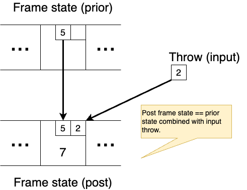
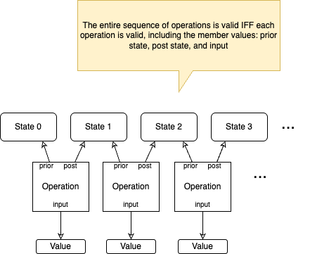

osm-games
The Problem
Software "specs" are not objectively verifiable. There's no mechanical, objective, repeatable way to prove a piece of software meets a written "spec".
The Solution
Operation-state modeling (OSM): a logical, verifiable description of system behavior
This Repo
The osm-games repo is a demonstration of operation-state modeling (OSM, pronounced "awesome"). This repo defines operation-state models of a few
popular games: Connect Four, bowling, backgammon, and spades (a card game).
It also demonstrates the tools and techniques for verifing a game sequence conforms to an OSM through the use of a type of software
known as an SMT solver.
Table top and card games are just special cases of multi-party workflows. The intention of this repo is to show that OSM is a practical technique for specifying complex, multi-party, and distributed system behavior -- really any process that produces a sequence of state changes. The repo also demonstrates how to create software behavior validators out of OSM descriptions using freely available tools.
OSM Specs
This repo uses the smtlib2 language to describe various game sequences from start to finish as a system of equations. smtlib2 is
a Lisp-like language designed to express propositional logic, various math theories, and algebraic datatypes --
that is, equational math. Multiple freely available software packages, known as SMT solvers, read and automatically solve equational
systems written in smtlib2: Z3 from Microsoft and
CVC5 are two popular examples. An SMT solver makes OSM specs written in smtlib2 usable 1.
With an SMT solver we can:
-
Verify a game sequence, or any workflow sequence, conforms to an operation-state model. This is the key goal of OSM. The problem OSM aims to solve stems from the fact that software "specs" are unverifiable. They are generally comprised of words and drawings, which sometimes are incredibly detailed (though often not). But there is no tool or mechanism on Earth able to objectively verify an implementation actually conforms to words and drawings, no matter how detailed. With OSM and an SMT solver, there's a way to specify expected behavior, and tools to prove observed behavior does not conflict with specification through an automated, objective, and repeatable mechanism.
-
Unambiguously answer novel and unanticipated questions about expected system behavior. Using all the power of mathematical refactoring and symbolic logic, we can answer questions not detailed in a specification. Deriving answers to novel and unanticipated questions from a spec based on words and visualizations will typically require time-consuming and expensive human interactions, inconsistent reasoning, "judgement calls", authoritative dicta, and all the myriad intellectual transgressions that stem from using the spoken word. But a logical description of behavior can answer novel facts about the expectations of a system. Someone implementing the software package for scoring a game of bowling, for example, need not consult an "expert" to answer questions about the finer points of the game if he has an OSM model available.
-
Generate test data. An exploitable feature of SMT solvers is that they are quite good at generating values for free variables in a system of equations. For example, given an equational description of bowling (which a bowling OSM is), one can direct an SMT solver to generate a complete valid game of bowling that includes a string of 3 strikes in successive frames. There's no need for a human to laboriously "make up" data that matches a specific test-case when such data is needed, so we can avoid this time-consuming and error prone part of software verification.
OSM Models in smtlib2 covers the tool chains and techniques I employ for developing OSMs in smtlib2.
Operation-state Models
An operation-state model (OSM) equationally describes the valid states and state transitions of a finite-state system or process, such as a table-top game. The description is comprised of:
-
A state model. At any one point in time, the state of the system can be fully described by a single instance of the state model. A graph of algebraic data values with tuples as graph vectors forms a system's state.
In the game of bowling, for example, individual throws are groupled into frames, and frames are grouped into a game. Each throw includes a count of points and some additional flags, such as foul and split. Every possible bowling game, at any point of play up to and including termination, is representable as an instance of this state model.
-
Operations. The system proceeds through its lifecycle by the sequential application of atomic operations. An operation is simply a tuple that equationally relates a prior state with a post state (which are each instances of the state model), operation input values, and soemtimes also operation output values.
In bowling there's only one type of operation: "apply throw". An apply throw operation value will be a tuple comprised of:
- a prior game: the state of the game before the throw is applied
- a post game: the state of the game after the throw is applied
- and a throw value: which is the throw that took the game from its prior state to its post state.
-
Validation logic. These are logical, mathematical assertions that a) define valid system state requirements in the form of invariant assertions on the system state data types; and b) cleanly define valid operation applications by relating the operation input, prior state, and post state values. The OSM's system of equations relates the three operation values (prior state, post state, and operation input).
In the game of bowling, for example, there are multiple assertions that distinguish a valid throw application from an invalid one:
- two throws in the same frame can't knock the same pins down twice
- the first bonus throw in from X is equal to the first normal throw of frame X+1 (a special scoring case for strikes and spares)
- the frame and game total score in the post game state must reflect the number of pins knocked down by the throw
- most importantly, a valid throw operation must reference a valid prior game state, a valid post game state, and a valid throw
The assertions are expressed as a set of predicate functions (ie, boolean statements) in the domain of game operations. Note that an equation is actually a boolean statement: if the left side of the equation is mathematically identical or reducible to the right side (or vice versa), then the equation is "true"; if the left side of the equation is proveably non-identical to the right, then the equation is "false". An OSM model expresses validation logic as a set of equations which must all be true in order for an operation application to be valid.

A game sequence is comprised of a chain of operation applications. Each operation application entangles a prior game state and a post game state. A prevous operation's post game state becomes the next operation's prior game state. Thus the game sequence is a chain of operation applications bound together by shared state instances, and is in fact simply a large system of equations.

An OSM can also be thought of as an operation sequence schema, in the same way that a regex expression can be thought of as a string schema. A regex describes a class of valid strings that conform to the regex's pattern. Similarly, the OSM describes a class of valid operation application sequences (a type of DAG) that conform to the OSM.
The role of the SMT solver is to solve an OSM system of equations, where the various player's "moves" during game are the bound values of the system's free variables.
Connect Four, Bowling, Backgammon, and Spades
The bowling OSM example defines the game of bowling as a system of equations relating Throw, Frame and Game
algebraic datatypes, and the game process is defined by an "apply throw" operation comprised of those data constructs. I authored
the bowling example to be the premier OSM example in this repo. It is designed to mirror the "Extreme Programming Episode"
by Robert Martin and Robert Koss, which has introduced generations of professional developer's to Test-Driven Development practices
since its publication some 20 years prior to the words you are reading now were written. As influential and entertaining as that piece
is, it's of some significance to recognize that the version of "bowling" that Martin & Koss develop during the "Episode" is in fact
not in conformance with any standard version of "bowling". The reputational popularity of Martin & Koss's episode, coupled with the
fact that it technically fails at its actual stated goal of scoring "a standard bowling card" 2, makes the game of bowling a great
focus for the OSM demonstration An Equational Thinking Episode.
The Connect Four OSM example is meant to be a gentle and yet non-trivial example of a game OSM. Connect Four is a childrens' table-top game exhibiting very few constraints on a simple domain. The Connect Four OSM describes this game with a single initial operation "choose first player", a repeated "played takes turn" operation, and a terminal "declare winner" operation. The game model consists of just an array storing the "game table position" to "checker color" relationship, and a couple other fields to store the current player and the winning player.
Studying the Connect Four OSM is a good way to get an introduction to smtlib2. Effectively representing a 6x7 2D game grid, for
example, is surprisingly different in smtlib2, a logical language, than in a traditional programming language.
The backgammon OSM example defines the game of backgammon as a system of equations relating Point, Bar, DiceThrow,
and Board algebraic datatypes. The game proceeds through "apply player turn" operations, which are comprised of these data constructs.
I included backgammon because it is a turn-based game with non-trivial rules for turn play, especially in cases where one player's pieces "block" the other's.
The spades OSM example defines the game of spades as a system of equations relating several algebraic datatypes, including
Hand, Trick, Bid, etc. Spades is a trick-playing card game played with 4 players arranged into teams. I consider this an interesting OSM game example for two reasons:
- the multiple phases each trick and each hand must pass through to complete a game make for an interesting study in game state representation
- the universe of card games is huge; laying down the mechanics of how to represent cards, hands, "dealing", and other common card game features opens up a wide set of non-trivial games to practice and perfect OSM techniques -- model contributions welcome!
-
The dream of verifiable system definitions stretches back to the early days of commercial software. In 1974 Jean-Raymond Abrial published the
Zlanguage (pronounced "zed"), a language for definiting system behavior using set theory and propositional logic, not completely unlike how OSMs describe behavior insmtlib2. The UML standard includes a logical verification language called the Object Constraint Language (OCL), which is also very similar in overall concept. Finally made an official OMG standard in 2006, OCL originates in the early 1990s. These are just some better-known examples -- there are literally dozens of examples created and abandoned over the decades. None of these languages were usable, however, because the logical theorem provers available at the time were far too incapable of proving non-trivial specifications, or the systems simply never included theorem provers at all. Modern SMT solvers and modern computers finally have the "heft" to solve the kinds of problems necessary to prove system behavior conformance. ↩ -
I'm not trying to throw shade on Martin & Koss by pointing out they missed their stated goal while demonstrating the powerful tools and techniques of TDD. In fact history has several exalted examples of books and works that introduce powerful intellectual tools to the world while technically missing the original goals of the work. Artistotle himself introduced the essential operators of boolean logic and set theory to the world in his Organon: the AND, OR, NOT operators an the existential and universal quanitifiers all were introduced to the world in his collected treatise. But Aristotle actually failed at his indended purpose, which was to rigorously define the exact logical meaning of Koine Greek words and phrases. (Turns out spoken language is fundamentally incongruent with logic.) And Cavalieri intended to equate classical geometry with then-nescent "sum of infinity" techniques in his 1627 work "Geometria indivisibilibus", which he technically failed to do. But he did succeed in introducing the world to the validity of techniques subsummed in what we call integral calculus today, most notably Cavalieri's principle. TDD is a foundational practice in modern software development and maintenance, and Martin & Koss's Episode earns credit for helping popularizing it. ↩